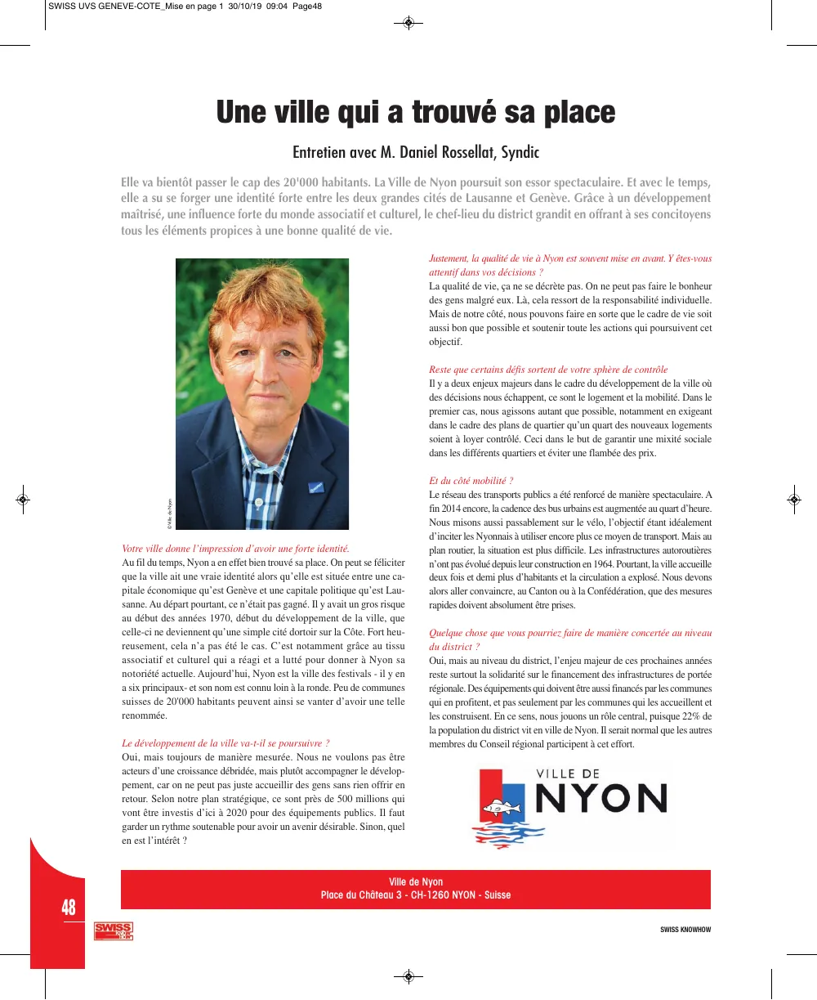
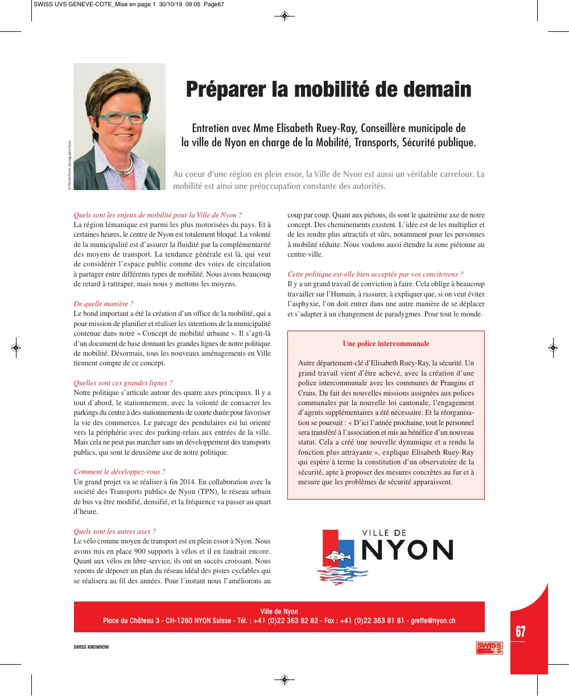
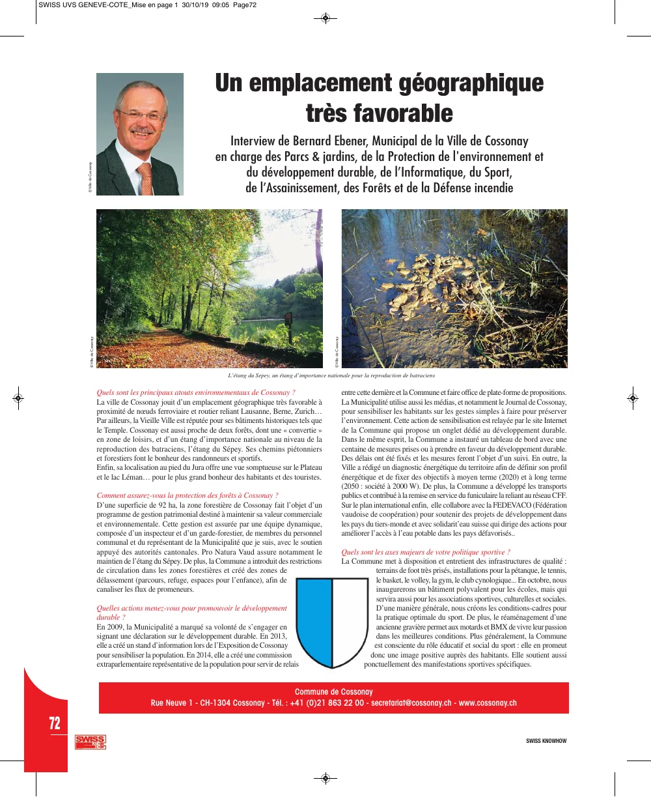

Interview · Swiss Knowhow – Genève et La Côte (janvier 2015)
Nyon – Une ville qui a trouvé sa place
Elle va bientôt passer le cap des 20'000 habitants. La Ville de Nyon poursuit son essor spectaculaire. Et avec le temps, elle a su se forger une identité forte entre les deux grandes cités de Lausanne et Genève. Grâce à un développement maîtrisé, une influence forte du monde associatif et culturel, le chef-lieu du district grandit en offrant à ses concitoyens tous les éléments propices à une bonne qualité de vie.
Votre ville donne l’impression d’avoir une forte identité.
Au fil du temps, Nyon a en effet bien trouvé sa place. On peut se féliciter que la ville ait une vraie identité alors qu’elle est située entre une capitale économique qu’est Genève et une capitale politique qu’est Lausanne. Au départ pourtant, ce n’était pas gagné. Il y avait un gros risque au début des années 1970, début du développement de la ville, que celle-ci ne deviennent qu’une simple cité dortoir sur la Côte. Fort heureusement, cela n’a pas été le cas. C’est notamment grâce au tissu associatif et culturel qui a réagi et a lutté pour donner à Nyon sa notoriété actuelle. Aujourd’hui, Nyon est la ville des festivals - il y en a six principaux- et son nom est connu loin à la ronde. Peu de communes suisses de 20'000 habitants peuvent ainsi se vanter d’avoir une telle renommée.
Le développement de la ville va-t-il se poursuivre ?
Oui, mais toujours de manière mesurée. Nous ne voulons pas être acteurs d’une croissance débridée, mais plutôt accompagner le développement, car on ne peut pas juste accueillir des gens sans rien offrir en retour. Selon notre plan stratégique, ce sont près de 500 millions qui vont être investis d’ici à 2020 pour des équipements publics. Il faut garder un rythme soutenable pour avoir un avenir désirable. Sinon, quel en est l’intérêt ?
Justement, la qualité de vie à Nyon est souvent mise en avant. Y êtes-vous attentif dans vos décisions ?
La qualité de vie, ça ne se décrète pas. On ne peut pas faire le bonheur des gens malgré eux. Là, cela ressort de la responsabilité individuelle. Mais de notre côté, nous pouvons faire en sorte que le cadre de vie soit aussi bon que possible et soutenir toute les actions qui poursuivent cet objectif.
Reste que certains défis sortent de votre sphère de contrôle
Il y a deux enjeux majeurs dans le cadre du développement de la ville où des décisions nous échappent, ce sont le logement et la mobilité. Dans le premier cas, nous agissons autant que possible, notamment en exigeant dans le cadre des plans de quartier qu’un quart des nouveaux logements soient à loyer contrôlé. Ceci dans le but de garantir une mixité sociale dans les différents quartiers et éviter une flambée des prix.
Et du côté mobilité ?
Le réseau des transports publics a été renforcé de manière spectaculaire. A fin 2014 encore, la cadence des bus urbains est augmentée au quart d’heure. Nous misons aussi passablement sur le vélo, l’objectif étant idéalement d’inciter les Nyonnais à utiliser encore plus ce moyen de transport. Mais au plan routier, la situation est plus difficile. Les infrastructures autoroutières n’ont pas évolué depuis leur construction en 1964. Pourtant, la ville accueille deux fois et demi plus d’habitants et la circulation a explosé. Nous devons alors aller convaincre, au Canton ou à la Confédération, que des mesures rapides doivent absolument être prises.
Quelque chose que vous pourriez faire de manière concertée au niveau du district ?
Oui, mais au niveau du district, l’enjeu majeur de ces prochaines années reste surtout la solidarité sur le financement des infrastructures de portée régionale. Des équipements qui doivent être aussi financés par les communes qui en profitent, et pas seulement par les communes qui les accueillent et les construisent. En ce sens, nous jouons un rôle central, puisque 22% de la population du district vit en ville de Nyon. Il serait normal que les autres membres du Conseil régional participent à cet effort.
Texte paru dans Swiss Knowhow – Genève et La Côte (janvier 2015), p. 48, tel que publié dans l'édition imprimée. En cas d'écart, la version imprimée fait foi.
Photos
Articles

Interview · texte intégralNyon – Une ville qui a trouvé sa place
Entretien avec M. Daniel Rossellat, syndic
Nyon – Maîtriser le développement urbanistique de la Ville
Entretien avec Mme Fabienne Freymond Cantone, municipale en charge de l'urbanisme et des ressources humaines
Nyon – Equipements : un retard à rattraper
Entretien avec M. Claude Uldry, conseiller municipal en charge des bâtiments, des finances, de l'informatique et de la population
Nyon – Trois piliers pour soutenir la Culture
Entretien avec Olivier Mayor, conseiller municipal en charge de la culture, des travaux et de l'environnement

Interview · texte intégralNyon – Préparer la mobilité de demain
Entretien avec Mme Elisabeth Ruey-Ray, conseillère municipale en charge de la mobilité, des transports et de la sécurité publique

Interview · texte intégralNyon – Des espaces verts, gages de qualité de vie
Entretien avec M. Claude Dupertuis, conseiller municipal en charge des espaces verts, forêts et services industriels